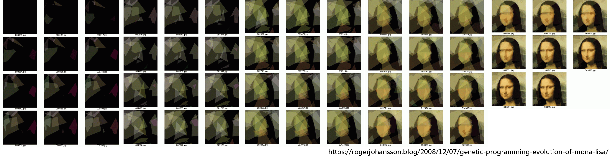
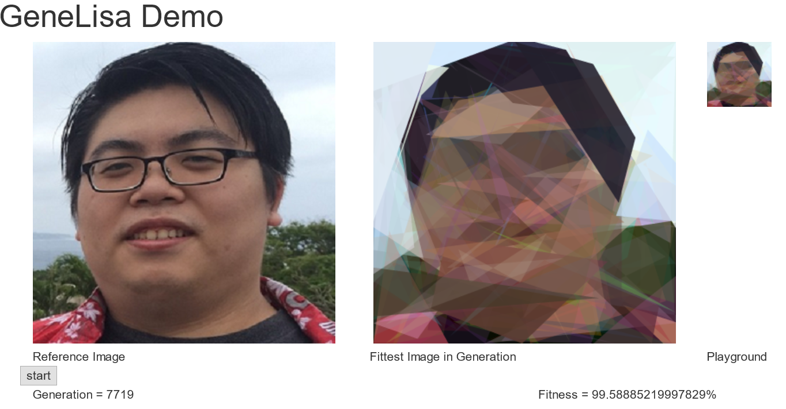

GeneLisa 基因麗莎
本項目的作者為 prabod，起源於 prabod 在網路上瀏覽到 Roger Johansson 部落格的時候，發現 Roger 利用基因演算法做了許多很厲害的事，他使用了 50 個多邊形來拚出了一幅蒙娜麗莎畫作。

因此 prabod 想嘗試看看用基因演算法來完成這件事，因此他使用了 Javascript 來實現這個想法，因此誕生了 GeneLisa (基因麗莎)，這個項目有完整的 Javascript 開放程式碼，而且程式碼很簡單也有簡易的介紹，大家可以去 clone 項目來自己試試看，你只需要把 GeneLisa.js 中的照片 mona.png 改成你的照片即可，對應像素大小也可在 GeneLisa.js 中修改。
我的照片在經過一段時間後，訓練結果如下圖：

你可以按上方「開始」和最初結果做比較，就能感受到基因演算法的優化能力。
翻譯／
fatfingererr